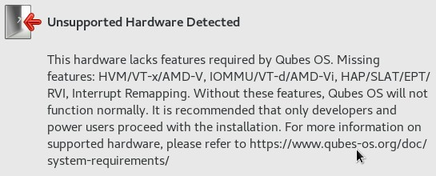
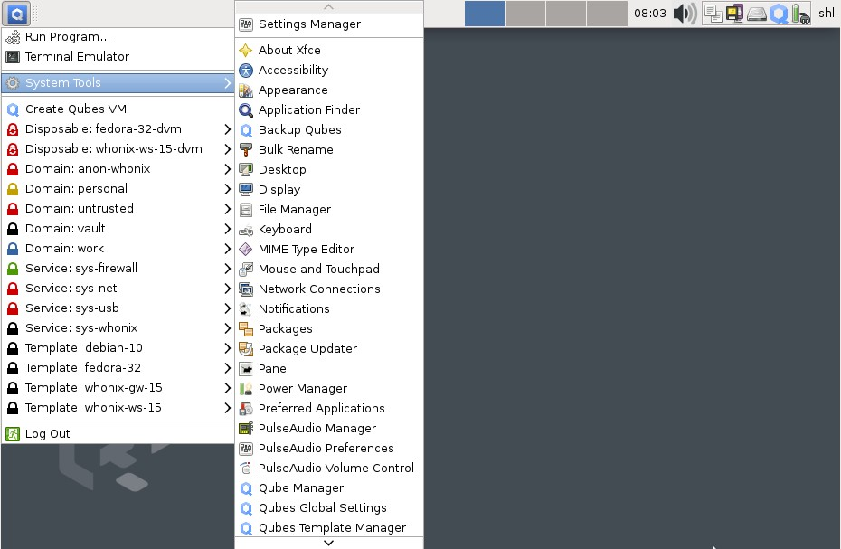
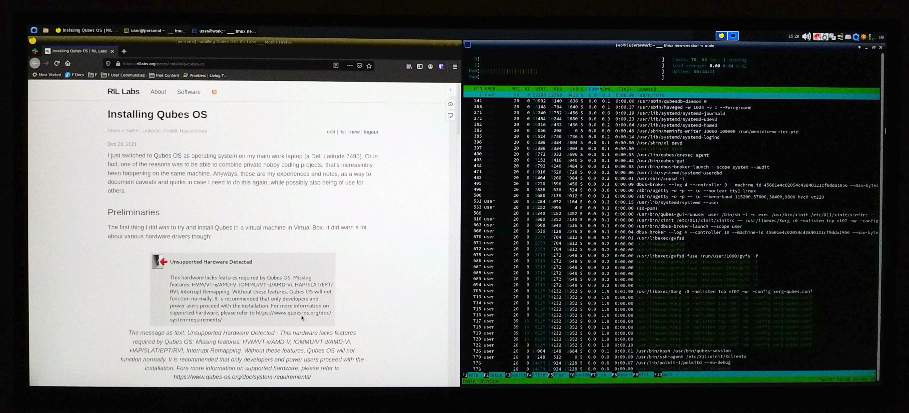

Installing Qubes OS
I just switched to Qubes OS as operating system on my main work laptop (a Dell Latitude). Or in fact, one of the reasons was to be able to combine work and private hobby coding projects, that’s increasinbly been happening on the same machine. Anyways, these are my experiences and notes, as a way to document caveats and quirks in case I need to do this again, while possibly also being of use for others.
What is Qubes OS?
Qubes OS is an operating system that tries to provide “reasonable security” to users by means of compartmenalization. By using virtualization technologies, it makes it easy to create multiple virtual machines that co-exist on the same computer. Now, couldn’t you just use multiple VirtualBoxes, you might ask? Well, Qubes makes the whole process a lot more smooth and integrated than that. For example:
- You can seamlessly have windows from multiple VMs open at the same time, and tile them as you want (only they will have a dedicated color in the outer frame to make sure you don’t mix them up).
- Multiple so called “App VMs” can share the same “Base VM” where you do all the installation of software etc, which means it is a lot less work to keep them updated with the latest packages.
- Routing of various appliances such as webcams, mics, USB-keybards and the like is done manually (though easily) for each App VM, so as not to accidentally open up attack vectors … all for increased compartmentalization and thus security.
If you are still not convinced, you might be when you learn that Qubes is recommeded by Edward Snowden :)
Preliminaries
The first thing I did was to try and install Qubes in a virtual machine in Virtual Box. It did warn a lot about various hardware drivers though:

Thus, trying out Qubes fully in VirtualBox didn’t seem like an option. Based on this info, you should also probably go though your BIOS settings and make sure that these settings are turned on if you plan on installing it “on metal”. In particular VT-x use to be possible to turn on/off in BIOS I think.
I still managed to install the base system in virtualbox though, but I reckon the actual boxes, or “qubes” would not work that well:

Creating an installable media
Anyways, on to the installation on metal. I first tried creating a USB stick with the Qubes OS .iso file using the popular UNetBootin software in Ubuntu, but that did not work. There was a warning about that during the installation. Thus, you need to instead use the dd tool to copy the image to the USB stick. BE WARNED though that this will completely erase all other data on the USB stick, so make sure to move away any data you might have there first!
The command is something like:
dd bs=4M if=/path/to/qubesos.iso of=/dev/sdb
WARNING: Check first that sdb is actually your usb drive! This can be done using a software such as gparted.
“No bootable device found”
After booting up the computer and installing Qubes OS through the graphical installer, with most settings set to default (a pretty easy and painless process), when restarting the computer, I got the message:
No bootable device found.
Not so fun. On the other hand, it turned out to be pretty easily fixed, by booting up the computer with a Live Ubuntu USB stick, and fixing the file paths in the UEFI partition according to this advice in the Qubes Docs . Copying the instructions here for backup:
Some firmware will not recognize the default Qubes EFI configuration. As such, it will have to be manually edited to be bootable. This will need to be done after every kernel and Xen update to ensure you use the most recently installed versions.
-
Copy the
/boot/efi/EFI/qubes/directory to/boot/efi/EFI/BOOT/(the contents of/boot/efi/EFI/BOOTshould be identical to/boot/efi/EFI/qubesbesides what is described in steps 2 and 3):cp -r /boot/efi/EFI/qubes/. /boot/efi/EFI/BOOT -
Rename
/boot/efi/EFI/BOOT/xen.cfgto/boot/efi/EFI/BOOT/BOOTX64.cfg:mv /boot/efi/EFI/BOOT/xen.cfg /boot/efi/EFI/BOOT/BOOTX64.cfg -
Copy
/boot/efi/EFI/qubes/xen-*.efito/boot/efi/EFI/qubes/xen.efiand/boot/efi/EFI/BOOT/BOOTX64.efi. For example, with Xen 4.8.3 (you may need to confirm file overwrite):cp /boot/efi/EFI/qubes/xen-4.8.3.efi /boot/efi/EFI/qubes/xen.efi cp /boot/efi/EFI/qubes/xen-4.8.3.efi /boot/efi/EFI/BOOT/BOOTX64.efi
It works!
Some caveats
After doing this and rebooting, it just works! What followed is just the normal setting up of things in Qubes OS. There were some things I learned that were not obvious from the start, and which can be useful to know though:
- I can not use my USB-connected keyboard to control the main interface (a.k.a. “dom0”). What I can do though, is to manually connect the keyboard to individual boxes by clicking the status icon in the top right corner (the one that looks like a gzip-icon). This is apparently due to some security concerns. The USB mouse works everywhere though. For keyboard use in dom0, I have to rely on the laptop’s built-in keyboard.
- For switching the USB keyboard between qubes I require two clicks: One to disconnect it from the current qube, and one to connect it to the new one. This means I’ll want to somehow minimize the number of qubes I need to switch between often. It would be nice to at least require just one click, or even better, be able to switch to another qube by e.g. right-clicking on a window belonging to that qube and selecting e.g. “connect keyboard to this qube”.
- Software installations have to be done in the “base qubes”, such as Fedora 32, Debian 10/11 etc. Software installations in “app VMs” won’t persist after rebooting. (For content in the home folder this seems to be reversed though: Stuff in the home folder is kept in the app VMs, but not in the base VMs).
- To have the newly installed software appear in an app VM after installing in the base VM, one will need to turn off both of them, and then start the App VM again.
- I did not manage to change font sizes in VMs if they were based on the Debian 10 or Debian 11 base images. I have written about it in the forum here (I DID manage to activate dark mode, as my forum message states). Thus, I have had to resort to using Fedora 32 as base image rather than Debian 11, which is a bit disappointing, as I’m much more used to Debian/Ubuntu-based distros.
- The base system is based on XFCE, and so is highly customizable. I was able to adjust it to be much more good-looking than the default config, in my opinion, using the “Adwaita-dark” theme, and some smaller fonts (More specifically: “Liberation Sans 10” for normal application content, set in the “appearance” app, and “Sans 10” for window titles and the like, set in the “Window manager” app).
Apart from these caveats though, everything works surprisingly well! The whole concept and implementation is very very impressive!

Further reading
- I found Qubes founder Joanna Rutkowska’s blog about how she set up the OS for her own workflow very useful in getting to think about how to best use the features for your own use cases. I have personally went with a much simpler set up for the time being, but the post helped me to clarify my own plan for this.